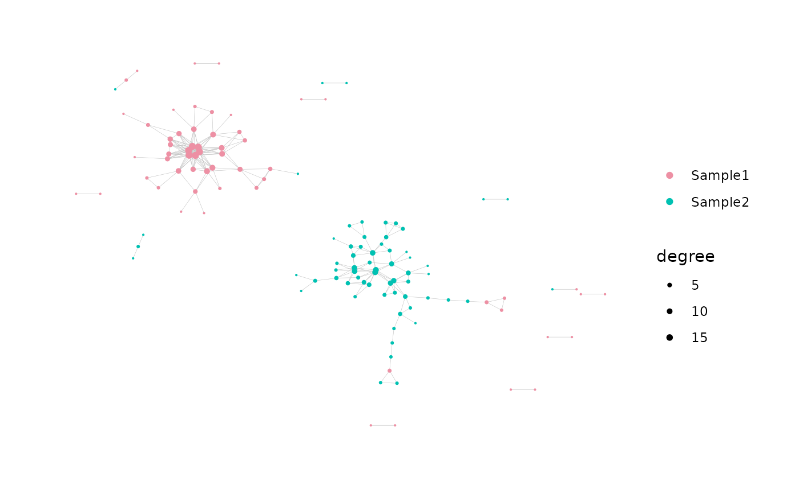
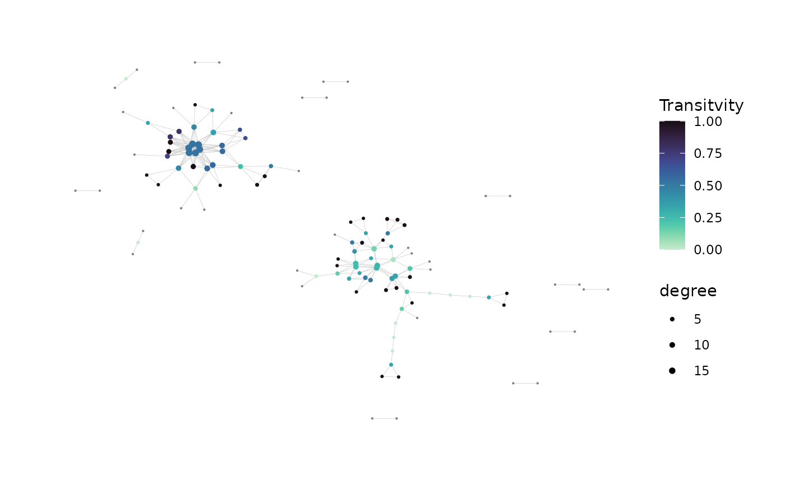
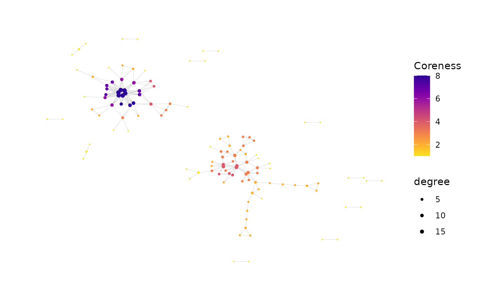

Generate Plots of a Network Graph
addPlots.RdGenerates one or more
ggraph plots of the network graph according to the user
specifications.
addPlots() accepts and returns a list of network objects, adding
the plots to the existing list contents. If the list already contains plots,
the new plots will be created using the same coordinate layout as the
existing plots.
generateNetworkGraphPlots() accepts the network
igraph and node metadata,
and returns a list containing plots.
Usage
addPlots(
net,
print_plots = FALSE,
plot_title = NULL,
plot_subtitle = "auto",
color_nodes_by = NULL,
color_scheme = "default",
color_legend = "auto",
color_title = "auto",
edge_width = 0.1,
size_nodes_by = 0.5,
node_size_limits = NULL,
size_title = "auto",
verbose = FALSE
)
generateNetworkGraphPlots(
igraph,
data,
print_plots = FALSE,
plot_title = NULL,
plot_subtitle = NULL,
color_nodes_by = NULL,
color_scheme = "default",
color_legend = "auto",
color_title = "auto",
edge_width = 0.1,
size_nodes_by = 0.5,
node_size_limits = NULL,
size_title = "auto",
layout = NULL,
verbose = FALSE
)Arguments
- net
A
listof network objects conforming to the output ofbuildRepSeqNetwork()orgenerateNetworkObjects(). See details.- igraph
An
igraphobject containing the network graph to be plotted.- data
A data frame containing the node metadata for the network, with each row corresponding to a node.
- print_plots
A logical scalar; should plots be printed in the
Rplotting window?- plot_title
A character string containing the plot title.
- plot_subtitle
A character string containing the plot subtitle. The default value
"auto"generates a subtitle describing the settings used to construct the network, including the distance type and distance cutoff.- color_nodes_by
A vector specifying one or more node metadata variables used to encode the color of the nodes. One plot is generated for each entry, with each plot coloring the nodes according to the variable in the corresponding entry. This argument accepts a character vector where each entry is a column name of the node metadata. If this argument is
NULL, generates a single plot with uncolored nodes.- color_scheme
A character string specifying the color scale to use for all plots, or a character vector whose length matches that of
color_nodes_by, with each entry specifying the color scale for the corresponding plot."default"specifies the defaultggplot()color scale. Other options are one of the viridis color scales (e.g.,"plasma","A"or other valid inputs to theoptionargument ofscale_color_viridis()) or (for discrete variables) a palette fromhcl.pals()(e.g.,"RdYlGn"). Each of the viridis color scales can include the suffix"-1"to reverse its direction (e.g.,"plasma-1"or"A-1").- color_legend
A logical scalar specifying whether to display the color legend in plots. The default value of
"auto"shows the color legend if nodes are colored according to a continuous variable or according to a discrete variable with at most 20 distinct values.- color_title
A character string specifying the title of the color legend in all plots, or a character vector whose length matches that of
color_nodes_by, with each entry specifying the title of the color legend in the corresponding plot. Only applicable for plots with colored nodes. The value"auto"uses the corresponding value ofcolor_nodes_by.- edge_width
A numeric scalar specifying the width of the graph edges in the plot. Passed to the
widthargument ofgeom_edge_link0().- size_nodes_by
A numeric scalar specifying the size of the nodes in all plots, or the column name of a node metadata variable used to encode the size of the nodes in all plots. Alternatively, an argument value of
NULLuses the defaultggraphsize for all nodes. Passed to the size aesthetic mapping ofgeom_node_point().- node_size_limits
A numeric vector of length 2, specifying the minimum and maximum node size. Only applicable if nodes are sized according to a variable. If
node_size_limits = NULL, the default size scale will be used.- size_title
A character string (or
NULL) specifying the title for the size legend. Only applicable if nodes are sized according to a variable. The value"auto"uses the value ofsize_nodes_by.- layout
A
matrixspecifying the coordinate layout of the network nodes, with one row for each node in the network and two columns. Each row specifies the x and y coordinates for the corresponding node. IfNULL, the layout matrix is created using[igraph:layout_components]{layout_components()}. This argument can be used to create plots conforming to the same layout as previously-generated plots. It can also be used to generate plots with custom layouts.- verbose
Logical. If
TRUE, generates messages about the tasks performed and their progress, as well as relevant properties of intermediate outputs. Messages are sent tostderr().
Details
The list net must contain the named elements
igraph (of class igraph),
adjacency_matrix (a matrix or
dgCMatrix encoding edge connections),
and node_data (a data.frame containing node metadata),
all corresponding to the same network. The lists returned by
buildRepSeqNetwork() and
generateNetworkObjects()
are examples of valid inputs for the net argument.
The arguments color_nodes_by and size_nodes_by accept
the names of variables in the node metadata.
For addPlots(), this is the data frame node_data
contained in the list provided to the net argument.
For generateNetworkGraphPlots(), this is the data frame provided
to the data argument.
addPlots() adds the generated plots to the list plots contained
in the list of network objects provided to net.
The plots element is created if it does not already exist.
If plots already exist, the new plots will be generated with the same
coordinate layout as the existing plots.
Each plot is named according to the variable used to color the nodes.
If a plot already exists with the same name as one of the new plots,
it will be overwritten with the new plot.
If the plots list does not already contain an element named
graph_layout, it will be added. This element contains the coordinate
layout for the plots as a two-column matrix.
When calling generateNetworkGraphPlots(), if one wishes for the plots
to be generated with the same coordinate layout as an existing plot, the
layout matrix for the existing plot must be passed to the layout
argument.
The plots can be printed to a pdf using
saveNetworkPlots().
Value
addPlots() returns a modified copy of net with the new plots
contained in the element named plots (a list), in addition to any
previously existing plots.
generateNetworkGraphPlots() returns a list containing the new plots.
Each plot is an object of class ggraph. Within the list of plots,
each plot is named after the variable used to color the nodes.
For a plot with uncolored nodes, the name is uniform_color.
The list containing the new plots also contains an element named
graph_layout. This is
a matrix specifying the coordinate layout of the nodes in the plots.
It contains one row for each node in the
network and two columns. Each row specifies the x and y coordinates for the
corresponding node. This matrix can be used to generate additional plots with
the same layout as the plots in the returned list.
References
Hai Yang, Jason Cham, Brian Neal, Zenghua Fan, Tao He and Li Zhang. (2023). NAIR: Network Analysis of Immune Repertoire. Frontiers in Immunology, vol. 14. doi: 10.3389/fimmu.2023.1181825
Author
Brian Neal (Brian.Neal@ucsf.edu)
Examples
set.seed(42)
toy_data <- simulateToyData()
net <- buildNet(toy_data, "CloneSeq", node_stats = TRUE)
net <- addPlots(
net,
color_nodes_by =
c("SampleID", "transitivity", "coreness"),
color_scheme =
c("Set 2", "mako-1", "plasma-1"),
color_title =
c("", "Transitvity", "Coreness"),
size_nodes_by = "degree",
node_size_limits = c(0.1, 1.5),
plot_subtitle = NULL,
print_plots = TRUE
)


